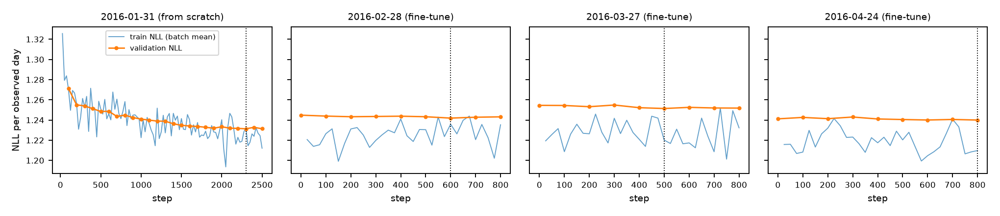
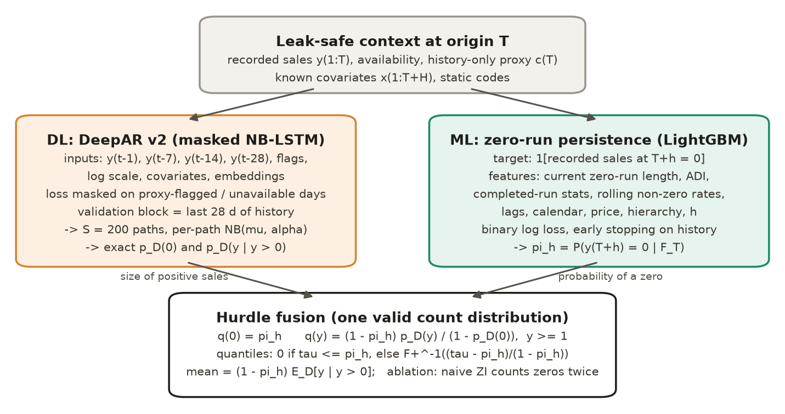
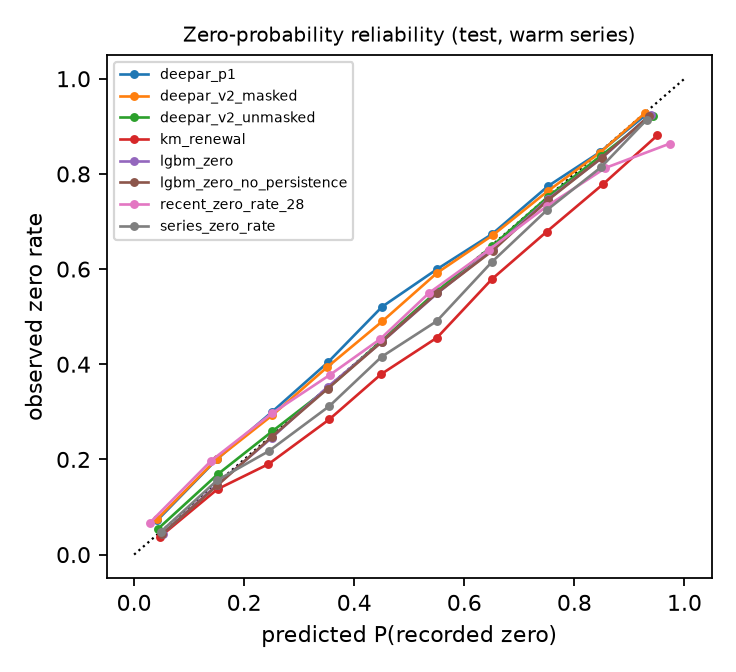
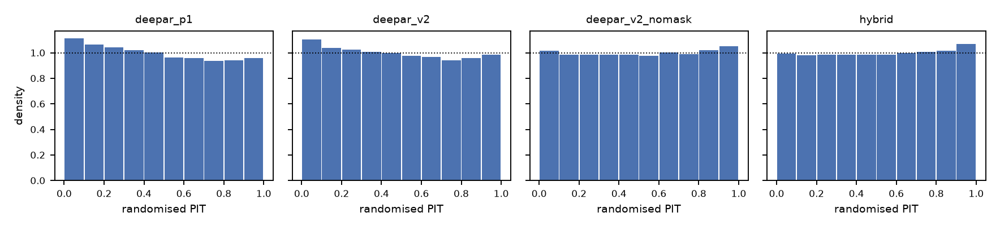
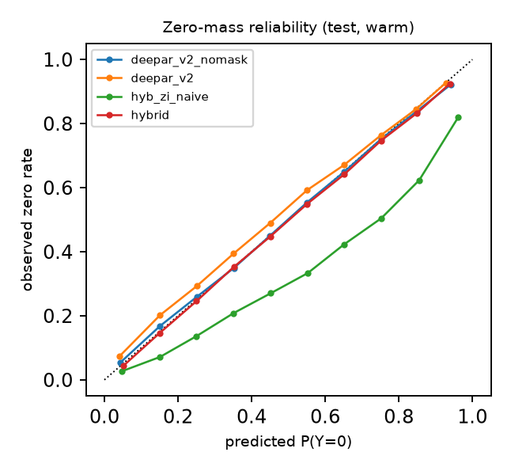

M5 has no inventory data. "Zero run" means recorded zero sales, never a confirmed stockout. All numbers: 1,200 M5 series, 4 rolling test origins × 28 days, warm series unless stated.
When zero runs may be censoring, a masked likelihood learns demand but stops predicting recorded zeros; an unmasked one learns zeros as demand. Can a calibrated zero model + masked DeepAR give the best of both, and is it better than simply not masking?
Pinball (proper), randomised PIT for counts (Czado 2009), Brier/log loss for P(0), paired bootstrap over series.
Phase 1 DeepAR re-run with the Phase 2 code: 0.0 max difference over 1,075,200 forecast values. Seeds 42, 43, 44 for every DL comparison.
| variant | pinball | best step |
|---|---|---|
| Phase 1 DeepAR | 0.2750 | – |
| + validation checkpoint | 0.2768 | 2300 |
| + lags 7/14/28 (selected) | 0.2728 | 2100 |
| + age | 0.2722 | 2500 |
| + AdamW | 0.2721 | 2500 |
Rule fixed before running: lowest value; gaps < 0.5% go to the simpler model. Age and AdamW were within the tie band, so not adopted.
Dropout 0.1, item-id dropout 0.15, L2 1e-5, gradient clip 10, cosine LR, best checkpoint on validation NLL (patience 5). Early stopping never triggered: the step budget, not over-fitting, binds.

NLL equals scipy's NB to 1e-8; sampler mean/variance/P(0) within 2%.
Observable target (recorded zeros), proper log loss, early stopping on history.
Sums to 1, non-negative, exact sampling (zero-truncated NB per path).
π·δ0 + (1−π)pD has q(0) = π + (1−π)pD(0) > π: DeepAR's zeros are counted twice. Kept as an ablation.

Masked DeepAR = demand when the item sells normally; supplies the shape of positive sales.
Run-length state is a sharp, tabular signal; trees exploit it. Supplies the zero mass.
deepar_hurdle in the standard runner: same origins, masks, saved samples and metadata.
| predictor | Brier | log loss | Brier, run ≥ 28 d |
|---|---|---|---|
| series zero rate | 0.1915 | 0.5643 | 0.1387 |
| zero rate, last 28 d | 0.1843 | 0.6778 | 0.1326 |
| Kaplan–Meier renewal | 0.1893 | 0.5710 | 0.1114 |
| LightGBM zero model | 0.1746 | 0.5229 | 0.1013 |
| without run features | 0.1748 | 0.5235 | 0.1014 |
| DeepAR v2 pD(0) | 0.1826 | 0.5442 | 0.1723 |
| DeepAR v2 unmasked pD(0) | 0.1754 | 0.5255 | 0.1024 |
LightGBM − KM renewal Brier: -0.0146 [-0.0169, -0.0126]; − masked DeepAR: -0.0079 [-0.0102, -0.0058]. Against unmasked DeepAR the gain is not significant: -0.0007 [-0.0015, +0.0000].

| model | WAPE all | pinball all | WAPE non-cens. | pinball non-cens. | pinball cold |
|---|---|---|---|---|---|
| Seasonal naive 4 wk | 0.7724 | 0.2899 | 0.7591 | 0.3092 | 0.3188 |
| Kalman | 0.7226 | 0.2736 | 0.6860 | 0.2822 | 0.3226 |
| LightGBM | 0.7094 | 0.2637 | 0.6630 | 0.2707 | 0.2736 |
| Kalman–LightGBM (P1 hybrid) | 0.7039 | 0.2620 | 0.6598 | 0.2693 | 0.2748 |
| Ensemble P1 | 0.7030 | 0.2623 | 0.6647 | 0.2706 | 0.2832 |
| DeepAR P1 ‡ | 0.6948 | 0.2612 | 0.6644 | 0.2721 | 0.2766 |
| DeepAR v2 ‡ | 0.6913 | 0.2606 | 0.6634 | 0.2720 | 0.2733 |
| DeepAR v2 unmasked ‡ | 0.6783 | 0.2567 | 0.6709 | 0.2764 | 0.2754 |
| Zero model + empirical sizes | 0.6876 | 0.2609 | 0.6816 | 0.2817 | 0.2740 |
| Hybrid ‡ | 0.6707 | 0.2533 | 0.6644 | 0.2734 | 0.2721 |
‡ mean of 3 seeds. All days = recorded sales; non-censored drops days in hindsight-flagged long zero runs.
all days: -0.0073 [-0.0101, -0.0047]
non-censored: +0.0013 [+0.0002, +0.0027]
all days: -0.0034 [-0.0048, -0.0022]
non-censored: -0.0030 [-0.0042, -0.0019]
all days: -0.0103 [-0.0139, -0.0071]
non-censored: +0.0027 [-0.0001, +0.0051]
Δ pinball, 95% paired bootstrap over series (1,000 draws). Green = significantly better, red = significantly worse.
| change (vs its baseline) | Δ pinball all days [95% CI] | Δ pinball non-censored [95% CI] |
|---|---|---|
| DeepAR P2 vs P1 | -0.0006 [-0.0013, +0.0001] | -0.0000 [-0.0005, +0.0004] |
| Loss masking (DeepAR) | -0.0039 [-0.0064, -0.0014] | +0.0043 [+0.0028, +0.0061] |
| Hybrid vs DeepAR | -0.0073 [-0.0101, -0.0047] | +0.0013 [+0.0002, +0.0027] |
| No DL component | +0.0072 [+0.0046, +0.0108] | +0.0079 [+0.0051, +0.0121] |
| Fusion: naive ZI | +0.0224 [+0.0212, +0.0235] | +0.0263 [+0.0251, +0.0274] |
| Fusion: inflate-only ZI | +0.0007 [+0.0004, +0.0010] | +0.0009 [+0.0006, +0.0013] |
| Fusion: gated | +0.0016 [+0.0004, +0.0028] | -0.0003 [-0.0011, +0.0004] |
Negative = the change helps. Seeds: DeepAR P2 vs P1, masking and hybrid vs DeepAR use 3 seeds; others seed 42. Full table with WAPE: results/phase2/pairwise_bootstrap.csv.

Max PIT deviation (seed 42): DeepAR v2 0.103, unmasked 0.050, hybrid 0.069.

| run at origin | all days | non-censored |
|---|---|---|
| 0 days | -0.0013 [-0.0026, +0.0001] | -0.0009 [-0.0022, +0.0007] |
| 1-6 days | -0.0013 [-0.0023, -0.0002] | -0.0010 [-0.0019, +0.0001] |
| 7-27 days | -0.0120 [-0.0215, -0.0043] | +0.0034 [+0.0000, +0.0078] |
| >=28 days | -0.0618 [-0.0852, -0.0415] | +0.0636 [+0.0348, +0.0999] |
For series already in a long zero run, the hybrid predicts more zeros. When sales resume inside the window, those days (the non-censored ones) are forecast worse. The hybrid targets recorded sales; masked DeepAR remains the better latent-demand model there.